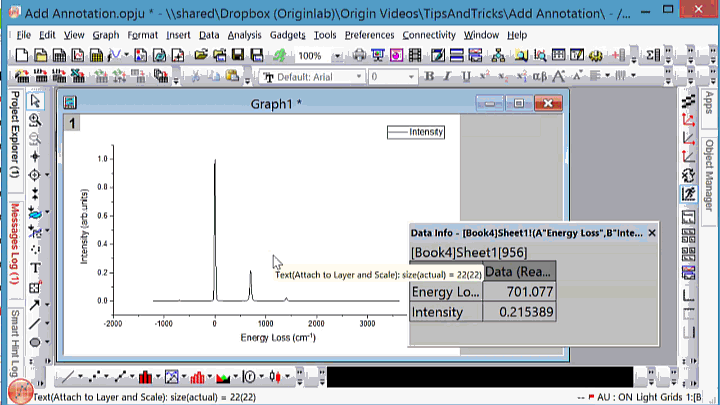

FAQ-491 Wie versehe ich einen Punkt im Diagramm mit einer Anmerkung?
customize-annotation
Letztes Update: 14.04.2021
Datenbeschriftungen, die mit dem Hilfsmittel Anmerkung  hinzugefügt wurden, können folgendermaßen benutzerdefiniert angepasst werden. Sie können sich auch auf dieser Youtube-Seite ein entsprechendes Video-Tutorial ansehen.
hinzugefügt wurden, können folgendermaßen benutzerdefiniert angepasst werden. Sie können sich auch auf dieser Youtube-Seite ein entsprechendes Video-Tutorial ansehen.
- Klicken Sie mit der rechten Maustaste auf die Beschriftung und wählen Sie Eigenschaften. Der Dialog Anmerkung wird geöffnet.
- Klicken Sie auf der Registerkarte Text auf die Pfeilschaltfläche
 , um eine standardmäßige Formatzeichenkette im Kontextmenü auszuwählen. Das Untermenü Beispiele bietet einige komplexere Beispiele. Alternativ geben Sie eine Zeichenkette direkt ein oder verwenden die LabTalk-Substitutionsnotation. Es wird eine Kombination von literalel Text und Variablen unterstützt.
, um eine standardmäßige Formatzeichenkette im Kontextmenü auszuwählen. Das Untermenü Beispiele bietet einige komplexere Beispiele. Alternativ geben Sie eine Zeichenkette direkt ein oder verwenden die LabTalk-Substitutionsnotation. Es wird eine Kombination von literalel Text und Variablen unterstützt.
- Um das benutzerdefinierte Format wiederholt verwenden zu können, klicken Sie auf die Schaltfläche Als Standard setzen. Wenn es gespeichert ist, kann das Format später aufgerufen werden, indem wiederholt die TAB-Taste gedrückt wird, bis Benutzerdefiniert neben dem Cursor des Anmerkungshilfsmittels angezeigt wird.
- Um das benutzerdefinierte Format auf alle Anmerkungen der aktuellen Zeichnung, einer Gruppe von Zeichnungen, den aktiven Layer, das gesamte Fenster etc. anzuwenden, wählen Sie das gewünschte Element in der Auswahlliste Anwenden auf.
- Drücken Sie die TAB-Taste, um zwischen den folgenden Optionen zu wechseln: (x,y), (x,y)[i], x, y, i.
- Die Anmerkungsoption wird neben dem Cursor des Anmerkungshilfsmittels angezeigt.
- Klicken Sie auf die Schaltfläche Zeiger
 . Halten Sie dann die ALT-Taste gedrückt und ziehen Sie eine existierende Beschriftung von Punkt zu Punkt. Die Beschriftung wird automatisch entsprechend der aktuellen Punktbedingungen aktualisiert.
. Halten Sie dann die ALT-Taste gedrückt und ziehen Sie eine existierende Beschriftung von Punkt zu Punkt. Die Beschriftung wird automatisch entsprechend der aktuellen Punktbedingungen aktualisiert.
- Klicken Sie auf die Schaltfläche Zeiger . Halten Sie dann die Tasten Strg+Shift gedrückt und ziehen Sie eine existierende Beschriftung zu einem anderen Punkt. Die neu hinzugefügte Beschriftung wird automatisch entsprechend der neuen Punktbedingungen aktualisiert.

- Klicken Sie mit der rechten Maustaste auf die Beschriftung und wählen Sie Eigenschaften. Der Dialog Anmerkung wird geöffnet.
- Klicken Sie auf der Registerkarte Text auf die Schaltfläche Abbildung Symbole
 . Dadurch wird der Dialog Abbildung Symbole geöffnet. Wählen Sie das gewünschte spezielle Symbol und klicken Sie auf die Schaltfläche Einfügen, um die Anmerkung einzufügen.
. Dadurch wird der Dialog Abbildung Symbole geöffnet. Wählen Sie das gewünschte spezielle Symbol und klicken Sie auf die Schaltfläche Einfügen, um die Anmerkung einzufügen.

Schlüsselwörter: Anmerkung, benutzerdefinierte Beschriftung, benutzerdefinierte Anmerkung